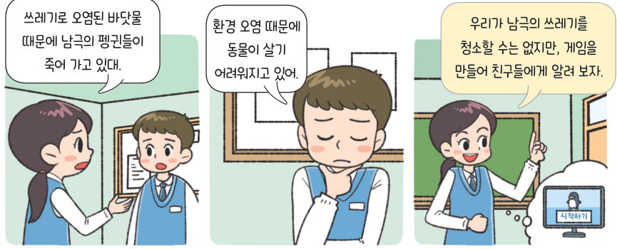

← KISPP · 중학교 정보 Ⅲ. 알고리즘과 프로그래밍

살아있는 교과서 · Ⅲ. 알고리즘과 프로그래밍 · 2. 프로그래밍 · 프로젝트 실습 113~116쪽
남극 쓰레기
줍기 게임
방향 키로 펭귄을 움직여 1초마다 생기는 쓰레기를 줍는 게임이다. 문제를 분해하고 알고리즘을 설계한 뒤 엔트리 블록과 함께 게임을 직접 해 보고, 점수와 난이도 조건을 더해 개선해 보자.
🎯 학습 목표 — 입출력과 변수, 비교 연산자를 활용하여 문제를 해결하는 프로그램을 작성하고 개선할 수 있다.
프로젝트 실습 · 문제 이해와 분석남극 쓰레기 줍기 게임 만들기 113쪽
113쪽“쓰레기로 오염된 바닷물 때문에 남극의 펭귄들이 죽어 가고 있대.” “우리가 남극의 쓰레기를 청소할 수는 없지만, 게임을 만들어 친구들에게 알려 보자.”
문제 상황 키보드의 방향 키(←↑→↓)로 펭귄을 움직여 1초마다 하나씩 나타나는 쓰레기를 줍는다. 줍지 못한 쓰레기 수가 다섯 개 이상이면 임무 실패로 게임이 종료되도록 한다.
1문제 분해와 핵심 요소 추출 해결해야 할 작은 문제에 필요한 핵심 요소를 연결해 보자.
| 입출력을 활용한 펭귄 이동하기 | |
| 쓰레기 나타내기 · 쓰레기 줍기 | |
| 게임 종료 확인하기 | |
2알고리즘 설계하기 작은 문제와 알고리즘을 연결해 보자.
| 펭귄 이동하기 | |
| 쓰레기 나타내기 | |
| 쓰레기 줍기 | |
| 게임 종료 확인하기 | |
프로그래밍하기 · 평가하기직접 해 보는 남극 쓰레기 줍기 114~115쪽
▶ 화면을 누르거나 스페이스 키로 시작! 방향 키(휴대폰은 아래 버튼)로 펭귄을 움직여요.
3비교 연산자의 뜻을 연결해 보자.
| A = B | |
| A > B | |
| A ≥ B | |
| A < B | |
| A ≤ B | |
5평가하기 기본 게임을 해 보고 점검해 보자.
| 펭귄은 키보드 방향 키를 눌렀을 때 해당 방향으로 움직이는가? | |
| 쓰레기는 1초 간격으로 생성되어 무작위로 화면에 배치되는가? | |
| 쓰레기는 펭귄에 닿으면 사라지고 쓰레기 수의 값이 1 감소하는가? | |
| 쓰레기가 다섯 개 이상 남았을 때 게임이 종료되는가? | |
해 보기 · 프로젝트 실습남극 쓰레기 줍기 게임 개선하기 116쪽
펭귄이 쓰레기를 주울 때마다 점수가 1점씩 추가되는 프로그램으로 개선하려고 한다. ➊ 점수 변수를 추가한다. ➋ 쓰레기를 수거할 때마다 점수가 1씩 증가한다.
조건 • 점수가 10점 미만이면 3초마다 쓰레기 복제되기 • 점수가 10점 이상 20점 미만이면 1초마다 쓰레기 복제되기 • 점수가 20점 이상이면 0.5초마다 쓰레기 복제되기
2점수에 따라 쓰레기가 복제되는 간격은?
| 점수 5 점 | |
| 점수 10 점 | |
| 점수 19 점 | |
| 점수 20 점 | |
4친구와 함께 아이디어를 내어 게임을 개선할 방법을 써 보자.
스스로 정리하기입출력을 활용한 게임 프로그래밍 113~116쪽
✔옳으면 O, 옳지 않으면 X
| 키보드 방향 키처럼 사용자가 주는 신호는 프로그램의 입력이 된다. | |
| 변수 ‘쓰레기 수’에는 지금까지 생성된 모든 쓰레기의 이름이 함께 저장된다. | |
| 평가 기준 | 스스로 평가 |
|---|
| 입출력을 활용하여 오브젝트를 움직이는 프로그램을 작성할 수 있는가? | |
| 변수와 비교 연산자를 이용해 게임 종료 조건을 만들 수 있는가? | |
| 환경 문제를 알리는 게임을 친구와 협력하여 개선할 수 있는가? | |